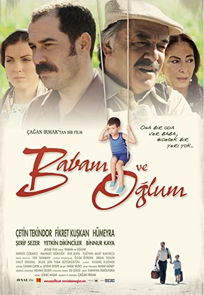
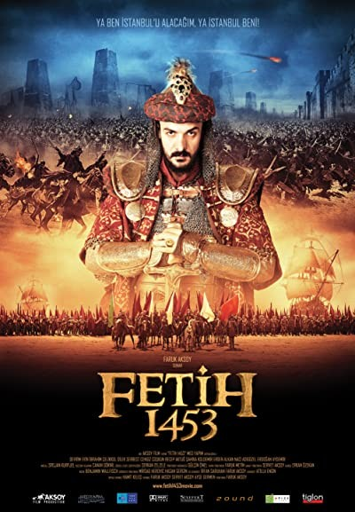
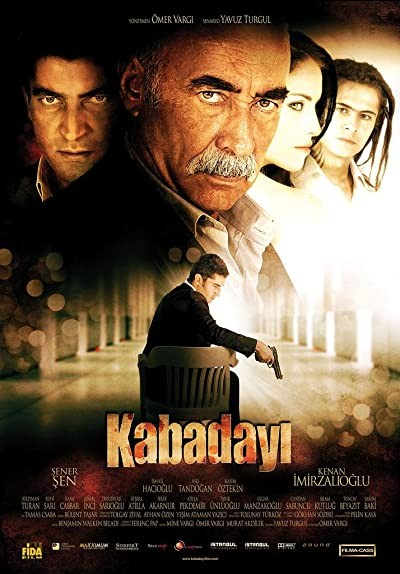

Babam ve Oğlum1980 darbesinde annesini kaybeden küçük Deniz (babası o dönemde bir çok erkek çocuğa verilen ismi koymuş) yedi yıl sonra hiç görmediği dedesinin Ege’deki çiftliğine doğru bir yolculuğa çıkar. Deniz’in dedesini hiç görmemesinin nedeni dedesiyle babasının yıllardır küs oluşudur. Hüseyin Efendi (Çetin Tekindor)okumaya diye gönderdiği oğlunun politik olaylara karıştığını öğrenince onu evlatlıktan silmiştir çünkü.Sadık’ın her şeye rağmen baba evine geri dönüşünün nedeni Deniz’den ayrılmak zorunda oluşudur; küçük oğlunu babasına emanet edecektir. Kelimenin tam anlamıyla Deniz bu çiftlikte hafif tatlı kaçık bir ailenin ortasında bulur kendini. Evin yanaşmaları,küs teyze(Şerif Sezer), traktör kullanan ve telsizle konuşan müthiş bir babaanne(Hümeyra), bileğinden boğazına kadar bilezikle dolaşan gelin Hanife (Binnur Kaya) ve saf bir amca (Yetkin Dikinciler).Düşünsenize hepsi bağırarak ve hep bir ağızdan konuşuyor. Sadık Uğruna savaştığı bir Türkiye’ye ve terk ettiği sevgilisiyle ve kendiyle kasabada yüzleşirken; çocuk, dedesinin ve babasının arasındaki tüm buzları eritecektir |
 |
Fetih 1453Babası II. Murat'ın ölümü üzerine ikinci kez tahta çıkan II. Mehmet'in şimdi kafasında gerçekleştirmesi gereken ilk öncelik Bizans İmparatorluğu'nun son toprağı olan Konstantinapolis'i Osmanlı Devleti'ne katmaktır. Bu uğurda ne yapılması gerekiyorsa genç padişah hiçbirinden feragat etmeyecektir... Osmanlı Devleti'ne çağ atlatarak imparatorluğa taşıyan Fatih Sultan Mehmet'in 1451 yılında henüz İstanbul'u alma planları yaptığı dönemden başlayan film, şimdiye kadar çekilmiş en büyük tarihi-kahramanlık projesi olma iddiasında. |
 |
Kabadayı“Meşhur Kabadayılardan Ali Osman (Şener Şen) eski günlerine veda etmiştir. Beklenmedik bir anda yıllardır görmediği ve aşık olduğu kadının izini bulur ve bir oğlu olduğu haberiyle sarsılır. Oğlu Murat (İsmail Hacıoğlu) sevgilisi Karaca (Aslı Tandoğan) ile bir barda çalışmaktadırlar. Karaca’ya yıllardır aşık olan mafya üyesi Devran ise(Kenan İmirzalıoğlu) kızı geri alabilmek için herşeyi göze almıştır. Ali Osman’ın artık tek amacı oğlu Murat ve sevgilisi Karaca’yı canı pahasına korumaktır. Devran için hayattaki tek amaç Karaca’dır ve yoluna çıkan herşeyi ve herkesi yok etmeye hazırdır....” |
 |